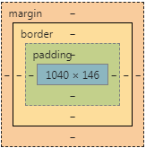
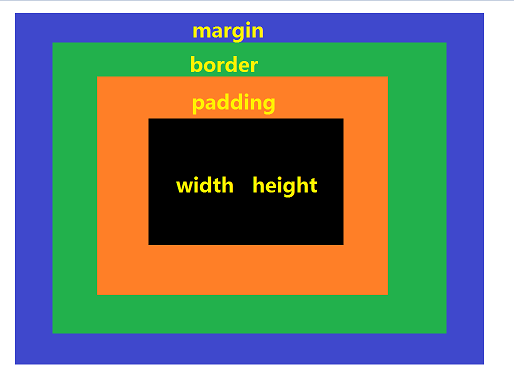
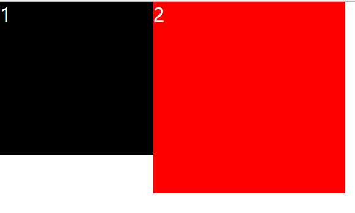
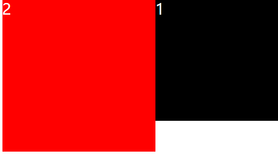
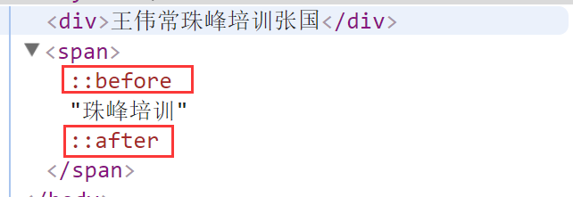

任何的元素有一个对应的盒子模型图，F12 控制台 Computed 面板下面会有一个人对应的盒子模型图，反应出对应的元素的一些信息；
盒子模型图只能反馈元素的宽度，高度，内边距，边框，外边距这些信息，其他的 css 属性不在盒子模型图上展示；


内边距属于内容的部分，会影响元素在浏览器中显示的实际大小,遵循顺时针方向:
上 右 下 左
取值情况：只有一个值
padding: 10px ; 上=右=下=左=10px
取值情况：二个值
padding: 10px 20px ; 上=下=10px 左=右=20px
取值情况：三个值
padding: 10px 20px 30px ; 上=10px 右=20px 下=30px 左=20px
取值情况：四个值
padding: 10px 20px 30px 40px ; 上=10px 右=20px 下=30px 左=40px
- border：边框线的宽度 边框线的类型 边框线的颜色
- border-top , border-bottom , border-left , border-right
- border-width 边框线的宽度
- border-style 边框线的类型 solid 实线 dashed 虚线 dotted 点状线
- border-color 边框线的颜色
面试题：如何用css绘制一个三角形（不允许使用图片）？
- 实现思路：利用border的三个属性（宽度 类型 颜色）绘制出一个正方形，而且这个正方形就是由4个三角形组合而成，然后保留一个方向的三角形，让其他方向的三角形颜色透明即可；
<style type="text/css">
.triangle{
width: 0;
border-width:200px;
border-style: solid;
border-color:darkgoldenrod transparent transparent transparent;
}
<div class="triangle"></div>
margin不属于内容的部分，不会影响元素在浏览器中显示的实际大小，只是与其他元素之间产生间距；
它的取值也有四种情况和padding取值情况一样，遵循的也是顺时针方向：上 右 下 左
margin: 0 auto : 上下为0 左右为auto 可以实现块级元素水平居中
面试题：margin-top 的传递问题以及如何解决
- 出现场景：一个父元素里面嵌套一个子元素，给子元素加margin-top值，想让子元素和父元素有间距分离的效果，但是不但没有我们想要的分离的效果，反而传递给父元素，出现的情况是整体往下移了；
- 解决方法：
- 给父元素添加属性 overflow : hidden
- 避开给子元素添加margin-top值，改为给父元素添加属性 padding-top ，但是要在父元素的高度上把这个padding-top的值剪掉
解决方法一：給父元素加overflow：hidden
<style type="text/css">
.black{
width: 400px;
height: 400px;
background: #000;
overflow: hidden;
}
.red{
width: 200px;
height: 200px;
margin-top:50px;
background: red;
}
</style>
<div class="black">
<div class="red"></div>
</div>
解决方法二： 給父元素加padding-top
<style type="text/css">
.black{
width: 400px;
height: 350px;
padding-top:50px;
background: #000;
}
.red{
width: 200px;
height: 200px;
background: red;
}
</style>
<div class="black">
<div class="red"></div>
</div>
面试题：margin的并列重叠问题以及如何解决
- 出现场景：上下垂直排列的结构，上边的元素设置margin-bottom；下边的元素设置margin-top值，这样会出现margin值的重叠，而且谁的值大，两者中间的间距就是谁的值；
- 解决方法：在其中的一个元素的外边再嵌套一个div，并且给这个嵌套的div 添加一个属性： overflow : hidden
<style type="text/css">
.black{
width: 400px;
height: 400px;
background: #000;
margin-bottom: 40px;
}
.red{
margin-top: 60px;
width: 200px;
height: 200px;
background: red;
}
.wrap{
overflow: hidden;
}
</style>
<div class="black"></div>
<div class="wrap">
<div class="red"></div>
</div>
能影响元素的实际大小的只有padding和border值，magin不影响实际大小
- 元素的实际宽度 = width + padding-lift/right + border-lift/right
- 元素的实际高度 = height + padding-top/bottom + border-top/bottom
box-sizing:content-box： 此属性表现为标准模式下的盒模型
padding和border不被包含在定义的width和height之内。对象的实际宽度等于设置的width值和border、padding之和，即 ( Element width = width + border + padding )box-sizing:border-box：此属性表现为怪异模式下的盒模型
padding和border被包含在定义的width和height之内。对象的实际宽度就等于设置的width值，即使定义有border和padding也不会改变对象的实际宽度，即 ( Element width = width )
1.标签的特点
- 以左右尖括号包起来，中间放标签名称
<div>- 标签名一般要小写；
- 一般由开始标签和结束标签组成，而且结束标签比开始标签多一个反斜杠
<div></div>- 有些标签没有结束标签，在开始标签的地方自动闭合, 这种标签叫做单标签/自闭合标签
<img /> <br /> <hr /> <link />
注意: 有结束标签的一定要结束标签,没有结束标签的千万不要手动再添加一个结束标签2.排列方式（正常的文档流: 水平或者垂直排列）：
- 水平排列方式
- 垂直排列方式
1.什么叫元素？
- 由开始标签到结束标签所有的内容就叫做元素；
2.什么叫元素内容？
- 开始标签和结束标签中间的内容叫做元素内容；
3.元素的分类
行内（内联）元素(display: inline ) a strong/b em/i span <br/> <img />
- 1) 天生自带属性display: inline,通常用来进行文字(加粗，斜体，链接)、小图标（小结构）的搭建
- 2) 不独占一行，从左到右依次排列；排列到超出父元素的宽度会自动折行;
- 3) 设置宽高属性以及margin和padding的上下不起作用，需要加
display:block/inline-block去转换为块级元素- 4) 不设置宽度属性的情况下，它的宽高是本身内容的宽高；
块级元素 (display:block) div ul/li ol/li dl/dt/dd p h1-h6 <hr>
- 1) 天生自带属性display: block,一般用来划分块结构或者搭建整个网页的布局
- 2) 独占一行，每个块级元素都会重新另起一行，从上到下依次排列；
- 3) 可以设置宽高以及盒子模型的所有的css属性
- 4) 块级元素不设置宽度的情况下，会继承父级元素的宽度,它的宽度是父元素的宽度;
- 5) 块级元素不设置高度的情况下，高度是它本身内容的高度;
行内块元素 (display: inline - block) img
- 1） 既有行内元素的特点，又有块级元素的特点；
- 2） 可以设置宽高以及盒子模型的所有属性
- 3） 不独占一行
面试题: 行内元素和块状元素分别有什么，区别是什么？
面试题: 列出display的值，说明他们的作用? font-size:0;*display:inline;*zoom:1

div，而且给div添加一个属性为clear：both；我是一块砖 哪里需要 就往哪里搬.clearfix:afer{
content:'';
display:block;
clear:both;
}
<div class="main clearfix">
<div class="right">2</div>
<div class="left">1</div>
</div>
<div class="main1 clearfix">
<div class="right">2</div>
<div class="left">1</div>
</div>
// 具备两个条件:
// 1.具有块特点的标签，就算不是块级标签也需要转换为块级标签
// 2.给这个块级标签添加一个属性clear:both
<div class="main">
<div class="right">2</div>
<div class="left">1</div>
<div style="clear:both;"></div>
</div>
<div class="main">
<div class="right">2</div>
<div class="left">1</div>
<a style="display:block;clear:both;"></a>
</div>
最完整clearfix清除浮动的方法：
.clearfix:after{
content:'';
display:block;
clear:both;
width:0;
height:0;
line-height:0;
font-size:0;
visibility: hidden;
overflow:hidden;
}
.clearfix{
zoom:1;
}
面试题: 罗列出清除浮动的方法?
面试题: 让元素消失有多少种方法? :before在指定元素之前添加子元素
:after在指定元素之后添加子元素
<style type="text/css">
span:before {
content: '王伟常';
}
span:after {
content: '张国';
}
</style>
<div>王伟常珠峰培训张国</div>
<span>珠峰培训</span>

相同点
注意：z-index一定要和position一起使用；否则不起作用；定位的区别
绝对定位和固定定位会脱离正常的文档流（平行漂浮于元素之上：重叠）绝对定位是会随着滚动条的滚动而滚动相对定位不会脱离正常的文档流固定定位是固定不动，不会随着滚动条的滚动而滚动固定定位整个浏览器的窗口相对定位它自己原来本身的位置
position:relative 在实际项目中：
1.background-color/background 背景颜色
黑色背景而且有50%的透明度：取值范围【0-1】
background:#000;opacity:.5;
=>background:rbga(0,0,0,.5)
2.background-image / background 背景图片
background:url(`背景图片的路径地址`)
3.background-repeat 背景重复/平铺方式
4.background-position:x轴 y轴 背景位置
5.background-attchment 背景图像是随对象内容滚动还是固定的
简写：每个单独的值中间用空格隔开 background：背景颜色 背景图片 背景平铺方式 背景坐标位置 背景滚动或者固定